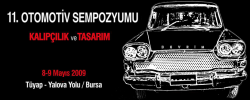

15 - 16 Aralýk 2009 > ÝSO 8. Sanayi Kongresi ve Ýnovasyon Sergisi
Yer: WOW Uluslararasý Kongre Merkezi
Ýstanbul Dünya Ticaret Merkezi, Yeþilköy Ýstanbul
Ýþ dünyamýzýn en köklü temsilcilerinden olan Ýstanbul Sanayi Odasý, kurulduðu 1952 yýlýndan bu yana Türk sanayisinin geliþmesine ve güçlenmesine hizmet etmektedir.
Ýmalat sanayiinin rekabet gücünün geliþmesine katkýda bulunmak amacýyla Ýstanbul Sanayi Odasý, ana temasý "Sürdürülebilir Rekabet Gücü" olan ilk Sanayi Kongresi'ni 2002 yýlýnda gerçekleþtirmiþtir. Ýlk Kongre'den bu yana her yýl düzenlenen Sanayi Kongreleri, Türk sanayisinin küresel boyutta baþarýsýný temin edecek ve sürdürülebilir kýlacak konularýn zengin bir yelpazede ele alýndýðý, vizyoner bir tartýþma platformu olarak tasarlanmaktadýr.
Bu yýl, gerçekleþtirilecek Sanayi Kongresi kapsamýnda bir Ýnovasyon Sergisi'ne de evsahipliði yapýlacaktýr.
Ana temasý "Sürdürülebilir Rekabet Gücü: Kriz Sonrasý Yeni Yön" olarak belirlenen "ÝSO 8. Sanayi Kongresi ve Ýnovasyon Sergisi" ile firma ve kurumlarýn, yenilikçi ve teknoloji öncelikli ürün veya sonuçlanmýþ projelerini tanýtmalarý ve iþbirlikleri oluþturabilmeleri amaçlanmaktadýr.
Firmalar ve kurumlar, sergiye konu ürün veya sonuçlanmýþ projelerini "Bilgi", "Fikir ve Proje" ve "Ýnovasyon" tematik alanlarýnda yer alacak standlarda sergileyeceklerdir. Detaylý bilgi için týklayýnýz
Ulusal ve uluslararasý kurum ve kuruluþlarýn üst düzey temsilcilerinin konuþmacý olarak yer alacaðý bu etkinlikte, yaþanan küresel kriz ve ekonomide yaþanan geliþmeler ýþýðýnda, Türk sanayii açýsýndan geleceðe dönük beklentiler ve baþarý için yeni bir yol haritasý konularý konuþmacýlarýmýzýn görüþ ve önerileri ile deðerlendirilecektir.
8. Sanayi Kongresi ve Ýnovasyon Sergisi programýný incelemek için lütfen aþaðýdaki linkleri týklayýnýz;
Daha fazla bilgi va kayýt için: www.iso.org.tr/kongre
06 - 07 Kasým 2009 > Uluslararasý Ýstanbul Endüstriyel Tasarým Zirvesi
Yer: Hyatt Regency Ýstanbul
Endüstriyel Tasarýmcýlar Meslek Kuruluþu "ETMK"Istanbul Þubesi Ýþbirliðiyle
Akademik Koordinasyon: Ýstanbul Teknik Üniversitesi Endüstri Ürünleri Tasarýmý Bölümü
1. Gün: 6 Kasým Cuma |
08.30 – 09.00 |
Açýlýþ Konuþmalarý |
Sertaç Ersayýn / Endüstriyel Tasarým ve Tasarým Yönetimi Hizmetleri / ETMK Ýstanbul Þube Baþkaný
Doç. Dr. Özlem Er / ÝTÜ Endüstri Ürünleri Tasarýmý Bölümü
|
09.00 – 09.45 |
Tasarým Ýnovasyonu: Hýz, Kullanýlabilirlik, Ýmalat Esnekliði ve Uygunluk |
Gideon Samid Ph. D. / Case Western Reserve Universitesi, ABD
|
09.45 – 10.30 |
Amerika’da Endüstriyel Tasarým Geliþimine Tarihsel Bakýþ: "Görselden Hissedilene, Hissedilenden Sanala" |
Peter W. Bressler / Amerikan Endüstriyel Tasarým Birliði (IDSA) Eski Baþkaný, Bresslergroup kurucu ve yöneticisi, ABD
|
10.30 – 10.45 |
Kahve Arasý |
10.45 – 12.15 |
Tasarýmý Kullanarak Kazananlar I |
Murat Kolbaþý / Arzum Elektrikli Ev Aletleri Y.K. Bþk. |
Arzum’da Ürün Geliþtirme Yaklaþýmý |
Nadir Doðan Kaþýkçý / T-Box Genel Md. |
Marka Ýletiþimi Baðlamýnda Tasarým- Pazarlama Etkileþimi |
Cengiz Ýnce / Hisar Çatal Kaþýk CEO |
Tasarýmýn Marka Deðerine Katkýsý |
12.15 – 13.30 |
Öðle Yemeði / Lunch Time |
13.30 – 15.00 |
Tasarýmý Kullanarak Kazananlar II |
Berna Erbilek / Eczacýbaþý Yapý Gereçleri - VitrA Pazarlama Müdürü |
Tasarýmla Deðer Yaratmak |
Burak Emre Altýnordu / Vestel Endüstriyel Tasarým Bölümü Müdürü |
Büyük ve Farklý Markalar Ýçin Üretim Yapan bir Firmada Tasarým Yönetimi |
Burak Orhun / Kale Seramik Pazarlama Müdürü |
Tasarýmýn Kurumsal Strateji Baðlamýnda Kullanýmý |
15.00 – 15.15 |
Kahve Arasý / Coffee Break |
15.15 – 16.45 |
Marka Olmak için Tasarýmýn Stratejik Kullanýmý |
Demir Obuz - Mehtap Obuz / demirdendesign / ilio |
Güçlü Kavram, Ýnovatif Tasarým; Demirden Design`ýn ilio Markasýný Yaratma Süreci. Marka, Ürün, Kavram Bütünlüðü ve Algý Stratejisinin Oluþturulmasý. Kalitenin Sürdürülebilirliði |
Seyhan Özdemir - Sefer Çaðlar / Autoban |
Tasarým Odaklý Bir Firmada Tasarým Yönetimi |
Gaye Çevikel / Gaia&Gino |
Sürdürülebilir Baþarý Ýçin Tasarým |
16.45 – 17.00 |
Kahve Arasý |
17.00 – 17.30 |
Tasarým ve Marka Ýletiþimi |
Çiðdem Ersayýn / Öðretim Görevlisi, Galatasaray Üniversitesi
|
17.30 – 18.30 |
Panel: Tasarýmýn Korunmasý – Yasal Çerçeve |
Moderator: Doç. Dr. Özlem Er, ÝTÜ ENTAS
Panelistler:
> Av. Dilek Üstün Ekdial / Ýstanbul Patent Marka ve Danýþmanlýk Ltd. Þti. Kurucu Ortaðý ve Y. K. Üyesi
> Av. Dr. Cahit Suluk / Suluk & Kenaroðlu Avukatlýk Bürosu
> Kunter Þekercioðlu / Kilit Taþý Tasarým
|
2. Gün: 7 Kasým Cumartesi |
09.00 – 10.00 |
Sony Ericsson’da Kullanýlabilirlik ve Yenilikçi Tasarým |
Michael Henriksson / Creative Director Sony Ericsson, Ýsveç
Bilgi Karan / Senior Industrial Designer, Sony Ericsson, Ýsveç
|
10.00 – 10.30 |
Tasarýmla Deðer Yaratmak |
Oscar Peña / Senior Creative Director, Philips Design, Hollanda
|
10.30 – 11.00 |
Ýnovasyon Ýçin Stratejik Entegrasyonu Saðlama Aracý Olarak Tasarým |
Özgür Taþar / Senior Designer, Philips Design, Hollanda
|
11.00 – 11.15 |
Kahve Arasý |
11.15 – 13.00 |
Farklý Sektörlerde Tasarým |
Doðan Erberk / ASD Genel Sekreteri |
Ambalaj Sanayisinin Tasarým Yaklaþýmý |
Orhan Irmak / Orhan Irmak Tasarým |
Hýzlý Tüketim Ürünleri Ýçin Ambalaj Tasarýmý |
Dr. Oya Akman / Oya Design |
Tasarýmda Malzeme ve Üretim Tekniði Yorumlarý, Farklý Üretim ve Pazarlama Deneyimleri |
13.00 – 14.00 |
Öðle Yemeði |
14.00 – 16.00 |
Tasarým Ýçin Araþtýrma – Araþtýrma Yöntemlerinin Firma Tasarým Stratejilerini Desteklemek Ýçin Kullanýmý |
Doç. Dr. Özlem Er / ÝTÜ Endüstri Ürünleri Tasarýmý Bölümü |
Tasarýmýn Araþtýrmayla Ýttifaký: Tasarým Ýçin Araþtýrmanýn Artan Önemi |
Steve Portigal, Portigal Consulting, ABD |
Tasarýma Ýlham ve Veri Saðlamak Ýçin Etnografik Araþtýrma |
Ersin Akdere/ Temsa Global Pazarlama Ürün Sorumlusu
Uygar Bahçeci / Temsa Ar-Ge ve Tek. Endüstri Ürünleri Tasarýmcýsý |
TEMSA Ürün Geliþtirme Süreçlerinde Kullanýcý Ýhtiyaç ve Tercihlerinin, Kullanýcýlarda Kalite Algýsýný Oluþturan Elemanlarýn Belirlenmesi |
Özgür Mutlu Öz / Endüstri Ürünleri Tasarýmcýsý, Arçelik Endüstriyel Tasarým Yöneticiliði |
Arçelik’te Kullanýcý Gözüyle Bakmak |
16.00 – 16.15 |
Kahve Arasý / Coffee Break |
16.15 – 16.45 |
Tasarým Yönetimi Yaklaþýmlarý - Uzakdoðu Deneyimi |
Sertaç Ersayýn / Endüstriyel Tasarým ve Tasarým Yönetimi Hizmetleri / ETMK Ýstanbul Þube Baþkaný |
16.45 – 18.15 |
Tasarýmda Süreç Yönetimi |
Fanny Cabanne / Plan, UK |
Tasarým Ýþ Tanýmý, Tasarým Süreci Yönetimi |
Kunter Þekercioðlu / Kilit Taþý Design |
Orta Ölçekli Firmalar Ýçin Ürün Tasarýmý |
Melih Gürleyik / MG Design, Almanya ve Türkiye |
Müþteri Odaklý Ürün Geliþtirme: Müþteri Talepleri Tasarým Sürecini Nasýl Etkiler? |
18.15 – 19.00 |
Kapanýþ Kokteyli |
Daha fazla bilgi için: www.designbosphorus.com
17 - 18 Ekim 2009 > V. Makine Tasarým ve Ýmalat Teknolojileri Kongresi (MATÝT)
Yer: Konya
Bildiri Konularý:
- Makine Ýmalat Sektöründe tasarýmýn önemi gerekliliði ve geliþim süreci,
- Makine Ýmalat Sektörü ve Eþ Zamanlý Mühendislik Uygulamalarý,
- Küreselleþmenin Makine Ýmalat Sektöründeki Etkileri, Deðiþim Süreci ve Rekabet,
- Makine Ýmalatýnda Ar-Ge ve Ýnovasyon Strateji ve Politikalarý,
- Ar-Ge Uygulamalarýnda Tasarým ve Tasarýmda Teknolojik Geliþme,
- Makine Ýmalatýnda Yeni Teknolojilerin Kullanýmý,
- Makine Tasarýmýnda Parametreler ve Optimizasyon,
- Makine Ýmalat sektöründe Kurumsal Eðitim;
- Üniversiteler,
- Bilim ve Araþtýrma Kuruluþlarý,
- Meslek Odalarý ve STK'larý
- Makine Ýmalat Mühendisliði Eðitiminde Dünya Genelinde Geliþmeler ve Türkiye,
- Makine Tasarým ve Ýmalatýnda Kalite Kavramý ve Uygulamalar,
- Makine Tasarým ve Ýmalatýnda yeni Malzemeler ve Teknolojiler,
- Makine Tasarým ve Ýmalatýnda KOSGEB'in Rolü ve Ýþlevi,
- Makine Ýmalat Sanayinde KOBÝ'ler, Tasarým ve Teknolojideki Sorunlarý,
- Tasarým, malzeme ve teknoloji Optimizasyonunda Geleneksel üretim Yapýlarýnýn Çok Yönlü Kullaným Yöntemleri,
- Takým, Aparat ve Kalýp Tasarýmý ve Uygulamalarý,
- Tasarýmda Kurumlararasý Ýþbirliði ve Koordinasyon.
Daha fazla bilgi için:
TMMOB Makine Mühendisleri Odasý Konya Þubesi
Hazým Uluþahin Ýþ Merkezi A Blok Kat:1
No:120-121-122
Selçuklu Konya
Tel: (332) 238 52 72
http:/matit.mmo.org.tr
08 - 10 Ekim 2009 > 4. Ulusal Tasarým Kongresi; tasarým veya kriz
Yer: ÝTÜ Ýstanbul
Tasarým ve kriz deðiþimin iki farklý yüzü; aralarýndaki diyalektik gerilim tam da içinde bulunduðumuz dönemde tasarým ve kriz iliþkisi üzerine düþünmeyi ve tartýþmayý deðer ve gerek kýlýyor.
Pozitif bir deðiþim ve sürdürülebilirlik tasarýmla ve tasarlayarak mümkün. Krizlere karþý firma ölçeðinde sürdürülebilir rekabet gücü kazanmaktan, ulusal ölçekte sürdürülebilir bir ekonomik büyümeye, sürdürülebilir sosyal ve kültürel veya bölgesel kalkýnmaya ve elbette doða ile uyumlu sürdürülebilir bir yaþam tarzýnýn kurgulanýp, yaygýnlaþmasýna dek pek çok farklý düzeyde tasarým çözüm potansiyeline sahip.
Türkiye'deki tüm tasarým araþtýrmacýlarýný, akademisyenleri, tasarýmýn pozitif katkýsý üzerine kafa yoran herkesi "tasarým veya kriz" baþlýðý altýnda 4. Ulusal Tasarým Kongresi'nde fikir ve çalýþmalarýný paylaþmaya davet ediyoruz...
Program özeti:
1. Gün
Medya, Etkileþim veya Kriz
Oturum Baþkaný: Can Özcan |
Üretim, Yönetim veya Kriz
Oturum Baþkaný: Füsun Curaoðlu |
Nedim Dayan |
'Bilgi Ekonomisi' Krizlerinden, Kadýn Odaklý Tasarým ile Çýkýþ Önerileri |
Mehveþ Çetinkaya |
Þiþhane ve Tasarým Odaklý Kentsel Dönüþüm - Alternatif Aktörler |
Hale Yaylalý, Benan Kapucu ve L.N. Ece Arýburun |
Kriz Baðlamýnda Türk Tasarým Medyasýnýn Geliþimi ve Sorunlarý |
Çiðdem Kaya |
Tasarým Olarak Ev Eksenli Üretim |
Canan Akoðlu ve Alpay Er |
Rol Paylaþýmýnda Kriz: Etkileþim Tasarýmý ve Endüstriyel Tasarýmýn Ürün Geliþtirme Faaliyetlerindeki Rolleri |
Dilek Akbulut |
Geleneksel Nesnelerin Endüstriyel Ürünlere Dönüþümünde Zanaat ve Endüstri Ýliþkileri |
Kimlik, Kültür veya Kriz
Oturum Baþkaný: Mehmet Asatekin |
Meslek, Hukuk veya Kriz
Oturum Baþkaný: Süha Erda |
Ayhan Usta ve Özgür Hasançebi Demirkan |
Bir Tasarým Verisi Olarak; Türkiye Burjuvazisinin Kimlik Krizi |
Cahit Suluk |
Tasarým Kanun Tasarýsý Üzerine Düþünceler |
Mehtap Öztürk Þengül |
Küçük ve Orta Ölçekli Mobilya Endüstrisinde Tasarým Süreçleri ve Tasarýmcýnýn Konumlanýþýnda Kültür Boyutu |
Onur Sabri Durak |
Tasarým Lisans Sözleþmeleri, Ekonomik Kriz Döneminde Lisans Sözleþmelerinin Önemi |
Etik, Politika veya Kriz
Oturum Baþkaný: Özlem Er |
Mühendislik, Teknoloji veya Kriz
Oturum Baþkaný: Haydar Livatyalý |
Gülay Hasdoðan |
Türkiye'de Devletin Endüstriyel Tasarýma Yönelik Giriþimleri ve Endüstriyel Tasarýmcýlar Meslek Kuruluþunun Bu Giriþimlerdeki Rolü |
Demet Günal Ertaþ |
Tasarýmda Fiziksel Yapýnýn Geliþtirilmesi |
D. Kaðan Güner |
Yeni Ürün Çaðýna Geçerken Endüstri Tasarýmýnda Kuramsal ve Uygulayým Analizi Olarak Sistem Tasarýmý |
Tevfik Uyar |
Havacýlýk Sektöründe Krizle Mücadele Yöntemi Olarak Tasarým |
| Osman Þiþman |
Tasarýmýn Vicdaný (!) |
Tolga Yanaþýk ve Thibault Quiviger |
Ürün Maliyetlerinin Düþürülmesi için Tasarýmda Eþzamanlý Mühendislik |
15:30 - 16:30 Prof. M P Ranjan: "Hand-Head-Heart: Ethics in Design"
- Tasarýmcý ve Öðretim Üyesi
- Centre for Bamboo Initiatives Baþkaný, NID (National Institute of Design)
16:30 - 17:15 ÝTÜ - Profilo Proje Ödül Töreni "Yerel Ýhtiyaçlar için Tasarým Çözümleri"
- Doç.Dr. Özlem Er, ÝTÜ
- Sedef Aksoy Abbasoðlu, Profilo Endüstriyel Tasarým Bölüm Baþkaný
- Bahriye Bayraklý Tavukçuoðlu, Profilo Pazarlama Müdürü
2. Gün
Eðitim, Tasarým veya Kriz
Oturum Baþkaný: Ýlhan Erhan |
Anlam, Felsefe veya Kriz
Oturum Baþkaný: Oya Boyla |
Serkan Güneþ |
Üniversitelerde Kýt Kaynaklarýn Paylaþýmý ve Temsiliyet Baðlamýnda Tasarým Eðitimi |
Ahmet Zeki Turan |
Büyük Patlama Sonrasý Eþyanýn Üç Ýsmi |
Elif Küçüksayraç |
Disiplinlerarasý Tasarým Eðitimi ve Araþtýrmalarý: Sürdürülebilirlik Kapsamýnda Finlandiya'dan Örnekler |
M. Alayça Erözçelik |
Kriz, Travma ve Çeliþki |
Deniz Sayar |
Endüstriyel Tasarým Öðrencilerinin Mesleði Algýlayýþ Biçimlerindeki Farklýlýklar Üzerine Bir Çalýþma |
- |
- |
Marka, Sektör veya Kriz
Oturum Baþkaný: Serkan Güneþ |
Ekonomi, Strateji veya Kriz
Oturum Baþkaný: Oðuz Bayrakçý |
Ayþem G. Çakýroðlu Baþar |
Türk Ayakkabý Sektöründeki Rekabet Gücünün Ýtalyan Ayakkabý Sektörünün Rekabet Stratejileri Üzerinden Analiz Edilmesi |
Elçin Tezel |
Krizler ve Bir Deðiþim Aracý Olarak Tasarým Olgusuna Tutunabilmek |
Gülay Usta, Dilara Onur ve Özge Sever |
Türkiye'de Kentleþme Krizinin Mobilya Sektöründe Yarattýðý Markalar |
Hakan Ertem |
Ekonomik Kriz Ortamýnda Yatýrým Ürünleri Tasarlamak |
F. Ali Paker |
Otomotiv Endüstrisinde, Yeni Teknolojilerin Tasarým Yönetimiyle Þekillendirilmesi |
Seçil Þatýr |
Kriz Dönemi ve Gelecek Yaþamlarý Ýçin: Tasarýmýn Sürdürülebilirliði |
Tarih, Ýnceleme veya Kriz
Oturum Baþkaný: Tevfik Balcýoðlu |
Firma, Organizasyon veya Kriz
Oturum Baþkaný: Seçil Þatýr |
Hacer Kocaman |
1980'li Yýllarda Türk Sanayinde Endüstri Ürünleri Tasarýmý ve Marka Kimliði Çalýþmalarý Hakkýnda Bazý Deðerlendirmeler |
Yasemin Soylu |
Deneyim Pazarlamasýnda Tasarýmýn Önemi Üzerine Vaka Analizi: Coats Türkiye |
Dilek Hocaoðlu |
Kriz Dönemlerinin Yardýmcýsý, Olaðan Günlerin Hobi Aracý: Singer Dikiþ Makinesi |
Özgür Kayhan |
Kriz Ortamýnda Stratejik Bir Araç Olarak Tasarým Ýþ Tanýmý: Türk Tasarým Pratiðinde Tasarým Ýþ Tanýmý Nasýl Anlaþýlýyor ve Kullanýlýyor? |
Eray Çaylý |
Kriz Dönemlerinde Tasarým: 1940'lar Britanyasý'ndan 'Utility Scheme' Örneði |
Bilgen T. Manzakoðlu ve Özlem Er |
Organizasyonel Kültürün, Firmalarýn Yeni Ürün Tasarýmý Anlayýþlarýna ve Yapýlanmalarýna Etkisinin, Tasarým Denetim Araçlarý Kullanýlarak Araþtýrýlmasý |
15:40 - 16:10 Koray Malhan: "Tasarýmda Ötenazi"
- Koleksiyon Mobilya Marka ve Tasarým Direktörü
16:10 - 17:30 Panel: Tasarýmýn Krizi, Krizin Tasarýmý
Panel Yöneticisi: Prof.Dr. Nigan Bayazýt
- Prof.Dr. Alpay Er, ÝTÜ
- Koray Malhan, Koleksiyon Mobilya
- Prof.Dr. Hayri Kozanoðlu, Marmara Üniv.
- Hasan Demir Obuz, Ýlio
- Osman Þiþman, Anadolu Üniv.
Daha fazla bilgi için: www.utk.itu.edu.tr
Not: TurkCADCAM.net, bu etkinliðin tanýtým sponsorlarýndandýr.
02 - 03 Ekim 2009 > I. Ulusal Talaþlý Ýmalat Sempozyumu (UTÝS2009)
Yer: Yýldýz Teknik Üniversitesi Merkez Kampüsü, Beþiktaþ Ýstanbul
Makine imalat sektöründe, talaþlý imalat oldukça önemli bir yer tutmakta olup, daha yüksek katma deðere ulaþmak, araþtýrma-geliþtirme ile saðlanabilir. Ar-Ge çalýþmalarýnda Sanayi-Üniversite iþbirliði gereklidir. Bu birliktelik ve iþbirliði, üniversiteler, imalat sektöründeki iþletmeler, ilgili dernekler ve araþtýrma kurumlarý arasýndaki diyaloglarýn güçlendirilmesi, ortak stratejiler geliþtirilerek, koordinasyonlar oluþturularak saðlanabilir.
Ülkenin kalkýnmasý ve yaþanýlan zorluklarýn üstesinden gelebilmenin yolu; birlikte olmak, kaynaþmak, ayný hedeflere odaklanmak ve çalýþmaktan geçmektedir. Böylesi çalýþmalarý gerçekleþtirmek için, öncelikle bu tür faaliyetlerde bulunarak, gerçekleþtirilen Ar-Ge çalýþmalarý hakkýnda bilgi sahibi olmak, bu yolda belirlenen, yaþanan sorunlarýn, öncelikli problemlerin, gereksinimlerin olasý çözüm önerilerinin ortaya konulacaðý bir tartýþma ortamý oluþturmak gerekmektedir.
Sempozyumun ilk günü bildirilerin sunumlarý yapýlacak, ikinci gün amaca yönelik sanayi temsilcilerini ve akademisyenleri buluþturacak panel ve yuvarlak masa toplantýlarý ile devam edilecektir. Etkinliðe katýlmayý arzu eden konu ile ilgili firmalar için kendi tanýtýmlarýný yapabilecekleri, panolar ve stant masalar verilebilecektir.
Sempozyumun konularý:
- Talaþ kaldýrma mekaniði ve dinamiði
- Talaþ kaldýrma sistemlerinin teorik uygulamalarý ve simülasyonu
- Talaþ kaldýrma iþlemleri
- Kesici takýmlar
- Takým ve iþ parçasý tutturma tertibatlarý
- Ýþleme kalitesi
- Takým tezgahlarý
|
- Talaþlý imalatta optimizasyon
- Yeni (alýþýlmadýk) talaþlý þekillendirme yöntemleri
- Mikro ve nano talaþ kaldýrma
- Yüksek hýzlý talaþ kaldýrma
- CAD/CAM sistemleri
- Amaç ve sempozyum kapsamýna giren diðer ilgili konular,
|
1. gün programý: utis2009_program_1_GUN.pdf
2. gün programý:
Panel - Moderatör; Prof. Dr. Engin Kýlýç (ODTÜ)
"Dünyada ve Türkiye'de takým tezgahlarý ve talaþlý imalat"
Panelistler:
Mustafa Dirin (Dirinler Makina)
Memduh Uz (Uzay Makina)
Erdal Gamsýz (Ses3000)
Dursun Çiçek (TÜBÝTAK Makine - Ýmalat Teknolojileri Grubu)
Doç. Dr. Erhan Budak (Sabancý Üniversitesi)
Forum - Forum baþkaný; Prof. Dr. Erhan Altan
- Kesici takým imalat ve kullanýmýnda problemler ve çözümleri
- Takým tezgahlarý sektöründeki problemler ve çözümleri
- Talaþlý imalat uygulamalarýnda problemler ve çözümleri
- Kesici takýmlar, takým tezgahlarý ve talaþlý imalat uygulamalarý konularýnda üniversite - sanayi iþ birliði ve Ar-Ge
Daha fazla bilgi için: www.yildiz.edu.tr/~utis2009
24 - 25 Eylül 2009 > RapidTech US-Turkey Workshop on Rapid Technologies:
Yer: Ýstanbul Teknik Üniv., Maçka Kampüsü
Join us in forming the collaborative links between the United States of America and Turkey on the emerging trends and applications of rapid technologies in the research, education and industry of biomedicine, defense, manufacturing, nanotechnology, pharmaceuticals, engineering, construction, art, archaeology, forensics, design, and photonics with noted speakers;
- Terry Wohlers, President of Wohlers Associates
- John Kawola, CEO of Z Corporation
- Ed Tackett, Director of NSF RapidTech Center
- Sydney Rogers, Executive Director of Alignment Nashville
- David Bourrel, Temple Foundation Professor, University of Texas at Austin
- Ismail Fidan, Professor of Tennessee Technological University
- Ken Patton, Business and Technology Dean of Saddleback College
Organization of this workshop was funded by The U.S. National Science Foundation - Course, Curriculum, and Laboratory Improvement & Developing Global Scientists and Engineers Programs and The Scientific and Technological Research Council of Turkey (TUBITAK)
| September 24 (Day 1) |
| Duration |
Session |
Topic |
| 08:30AM-09:30AM |
|
Registration - Light Breakfast |
| 09:30AM-09:45AM |
|
Welcoming Talk, Mehmet Karaca, PhD--ITU Vice President |
| 09:45AM-10:30AM |
Global Status of The Industry |
Worldwide Trends in Additive Manufacturing, T. Wohlers, Wohlers Associates, Inc., USA |
| 10:30AM-11:15AM |
A Brief History of Additive Manufacturing and the 2009 Roadmap for Additive Manufacturing: Looking Back and Looking Ahead
D. Bourel, University of Texas at Austin, USA |
| 11:15AM-11:30AM |
Break |
| 11:30AM-12:15AM |
The Wide Adoption of Color in 3D Printing, J. Kawola, Z Corporation, USA |
| 12:15AM-01:00PM |
Creation of RapidTech-National Center for Rapid Technologies, K. Patton, Saddleback College, USA |
| 01:00PM-02:00PM |
|
Lunch |
| 02:00PM-02:45PM |
State of The Industry in Turkey |
A short history and applications of 3D Printing technologies in Turkey,
E. Negis, TurkCADCAM.net, Turkey |
| 02:45PM-03:30PM |
Rapid Prototype Studies and Applications in ITU-Faculty of Aeronautics and Astronautics, A. R. Aslan, Istanbul Technical University, Turkey |
| 03:30PM-03:45PM |
|
Break |
| 03:45PM-04:30PM |
Rapid Technologies in P16 |
Rapid Prototyping-Distance Delivery Tools, I. Fidan, Tennessee Tech University, USA and B. Isik, Karabuk University, Turkey |
| 04:30PM-05:15PM |
Rapid Prototyping: A strategy to promote interest in STEM careers, S. Rogers, Alignment Nashville, USA |
| 05:15PM-06:00PM |
Project Based Learning for Higher Education in Additive Manufacturing, E. Tackett, RapidTech, USA |
| 06:00PM-07:00PM |
|
Get Ready for the Boat Tour |
| 07:00PM-09:00PM |
|
Bosphorus Boat Tour and Dinner for the Registered Attendees |
| September 25 (Day 2) |
| Duration |
Session |
Topic |
| 08:30AM-09:30AM |
|
Registration - Light Breakfast |
| 09:30AM-09:45AM |
|
Reflections and Impressions of the First Day |
| 09:45AM-10:30AM |
R&D Trends in Higher Education |
Production and Characterization of Uniform and Graded Porous Polyamide Structures Using Selective Laser Sintering, M. Erdal, S. Dag, Y. Jande and C. M. Tekin, Middle East Technical University, Turkey |
| 10:30AM-11:15AM |
Customized Scaffold Fabrication with Solid Free Form Technique C. Ergun, R. S. Toru, A. Bahadir, S. Yilmaz, Istanbul Technical University, Turkey, and S. Basa, Marmara University, Turkey |
| 11:15AM-11:30AM |
Break |
| 11:30AM-12:15AM |
An educational tool for RM feasibility evaluation, J. Munguia and C. Riba, Technical University of Catalonia, Barcelona, Spain |
| 12:15AM-01:00PM |
Introduction to the Mechanical Engineering Discipline through Hands-on Product Development Case Studies
G. Altuger, S. Tumkor, C. Chassapis, Stevens Institute of Technology, Department of Mechanical Engineering, Hoboken, NJ, 07030, USA |
| 01:00PM-02:00PM |
|
Lunch |
| 02:00PM-02:45PM |
R&D Trends and Educational Innovations in European Universities |
Rapid Manufacturing Research at the Catholic University of Leuven, E. Yasa and J. P. Kruth, Catholic University of Leuven, Belgium |
| 02:45PM-03:30PM |
Direct Digital Manufacturing as Communication and Implantation Tool in Medicine, I. Drstvensek, University of Maribor, N. I. Hren, University of Ljubljana, T. Strojnik, University Clinical Centre Maribor, Slovenia |
| 03:30PM-03:45PM |
Break |
| 03:45PM-04:30PM |
Effect of Thermal and Mechanical Deformation of Metamaterial FDM Components, H. K. Celik, Akdeniz University, Turkey, and R. Seviour, A. E. W. Rennie, Lancaster University, UK |
| 04:30PM-05:15PM |
Rapid Manufacturing of dental and medical parts via LaserCUSING® technology using Titanium and CoCr powder materials, M. C. Sinirlioglu, Hofmann Turk, Turkey |
| 05:15PM-06:00PM |
Reflections and Impressions of the Second Day and Workshop Evaluation |
| |
|
Group Picturing |
Daha fazla bilgi için: www.rapidtech.itu.edu.tr
Not: TurkCADCAM.net, bu etkinliðin tanýtým sponsorlarýndandýr.
Click here for the workshop photos, videos and presentations (pdf)
Etkinlik fotoðraf, video ve sunumlarý (pdf) için týklayýnýz |
18
- 21 Haziran 2009 > 5th International Conference and Exhibition on Design and Production of Machines and Dies/Molds:
(5. Uluslararasý Kalýp ve Model Tasarýmý
ve Üretimi Konferansý ve Sergisi)
Yer: Pine Bay Hotel, Kuþadasý, Aydýn
Objectives: To bring together experts from universities and industries from different countries to create a platform for exchange of experiences in machine and die/mold design and manufacturing. To create a platform for the discussion of design methods, machining techniques tool design, production, inspection systems and CAD/CAM/Robotics applications in this area. To offer training courses and workshops according to the needs of industry...
Topics: Computer Aided Design Methods, Computer Aided Manufacturing Methods, Computer Aided Inspection and Quality Control Systems, CAD/CAM/CAE Systems, CNC Systems for Die/Mold Machining Digitizing and Modeling, Process Modeling and Monitoring Process Simulation for Machine and Die/Mold Design, Injection Molding, Tooling for Casting, Sheet Metal Forming, Bulk Forming, New Processes, Finishing/Polishing Techniques, Economics of Machine and Die/Mold Manufacturing, Machining of Hard Materials, High Speed Milling applications, Electric-Discharge Machining applications, Rapid Engineering, Prototyping, Tooling Advances in Abrasive Technology
Konferans programý: DiemoldConferenceProgram2009.pdf
Daha fazla bilgi için: www.diemold.org
Not: TurkCADCAM.net, bu etkinliðin tanýtým sponsorlarýndandýr.
08 - 09 Mayýs 2009 > 11. Otomotiv Sempozyumu; Kalýpçýlýk ve Tasarým
Yer: Tüyap, Yalova Yolu, Bursa
Bildiri Konularý:
Otomotiv Sektörünün Bugünü ve Geleceði
- Sektörel Deðerlendirmeler, Ulusal ve Uluslararasý Direktifler, Teþvikler
- Sektörün Etkinliði, Firmalarýn Daðýlýmý
- Stratejik Planlama, Kriz ve Etkileri ve Krizden Çýkýþ
- Ülke Sanayisinin Konumu ve Türkiye Otomotiv Pazarýnýn Durumu
- Otomotiv Sanayi Haritasý
- Otomotiv ve Çevre
- Otomotivde Deðiþen Kullanýcý Profilleri, Etkileri
- Ana ve Yan Sanayi Ýliþkileri, Geliþme Stratejileri
Kalýpçýlýk Uygulamalarý
- Kalýpçýlýkta Bilgisayar Destekli Uygulamalar
- Kalýpçýlýkta Yeni Teknolojiler ve Tasarým Yaklaþýmlarý
- Yeni Malzemeler ve Uygulamalarý
- Hýzlý Prototipleme
- Kalýp Üretim Planlama ve Optimizasyon
Tasarým
- Ar-Ge, Yenilikçilik ve Tasarým Faaliyetleri
- Yeni Teknolojiler, Hibrit, Hidrojen Yakýtlý Otomobiller
- Tersine Mühendislik Uygulamalarý
- Tasarýmlarýn Korunmasýna Yönelik Mevzuatlar
- Teknoparklarýn veya Üniversitelerin Türkiye'dekiTasarým Faaliyetlerine Etkileri
Otomotivde Mühendislik
- Üretimin Yenilenen Organizasyon Yapýsý Ýçerisinde Mühendisliðin Rolü
- Otomotivde Çalýþan Mühendislerin Çalýþma Koþullarý, Sektörün Bugünü ve Geleceðine Dair Beklentileri
- Proje Yönetimi ve Mühendislik
Sempozyum programý
Daha fazla bilgi için:
TMMOB Makina Mühendisleri Odasý Bursa Þubesi
Barýþ Mah. Ýzmir Yolu No:200 B Blok
Nilüfer Bursa
Tel: (224) 443 52 10
http:/otomotiv.mmo.org.tr
02-03 Mart 2009 > YTÜ SSG'09 - YTÜ Savunma Sanayii Günleri 2009
Yer: Yýldýz Teknik Üniversitesi, Yýldýz Yerleþkesi Oditoryumu, Ýstanbul
Savunma Sanayii Müsteþarlýðý'nýn destek ve katýlýmýyla YTÜ Makine Teknolojileri Topluluðu ve YTÜ Makine Fak. Dekanlýðý iþbirliðiyle düzenlenen bu etkinliðin temel amacý; Yerli savunma sanayimizin ülkemiz için ne kadar önemli olduðunun üniversite gençleri tarafýndan bir kez daha farkýna varýlmasý, yerli üretilen savunma teknolojilerinin geliþiminden haberdar olunmasý ve ülke gençlerinin gelecekteki savunma sanayinin rotasý hakkýnda bilgi edinmesidir. Bunun yanýnda, Ar-Ge yoðunluklu çalýþmalarda bulunan firmalarý tanýyan ve ülkemizde ileri teknolojiye sahip ürünlerin üretilebileceðini gören özgüven ve motivasyon kazanmýþ genç mühendislik öðrencileri etkinliðin temel hedef kitlesini oluþturmaktadýr.
Etkinlikte, Türk Savunma Sanayii sektöründe görev alan öncü firmalarýn yaný sýra sektörde çalýþmalarýný sürdüren kurum ve kuruluþlarýmýz da yer alacaktýr. Bu kapsamda Savunma sanayinin dünü, bugünü ve yarýnýný ve ülkemiz için teknoloji ve ekonomi anlamýnda katkýlarýný ele alacaðýz. Sergi salonunda tüm gün, yerli ürünlerin (resim, maket, proje pano, video.) sergileneceði Yerli Savunma Sanayii Ürünleri Sergisi ve ayný zamanda katýlýmcý kurum ve kuruluþlarýn öðrencilerle buluþacaðý bir etkinlik de gerçekleþecektir.
Katýlýmcýlar arasýnda Savunma Sanayii Müsteþarlýðý ile birlikte SASAD, MSI, TUBÝTAK UEKAE, FNSS A.Þ., MKEK, TOSYÖV, Deniz Kuvvetleri Komutanlýðý MÝLGEM Proje Ofisi, Kara Harp Okulu Savunma Bilimleri Enstitüsü, TUSAÞ-Türk Havacýlýk ve Uzay Sanayii A.Þ., EX-EN Mühendislik, KALE Havacýlýk, RMK Marine gibi sektördeki önemli kuruluþlar bulunmaktadýr.
Daha fazla bilgi için: www.ytussg.org
Not: TurkCADCAM.net, bu etkinliðin tanýtým sponsorlarýndandýr. |